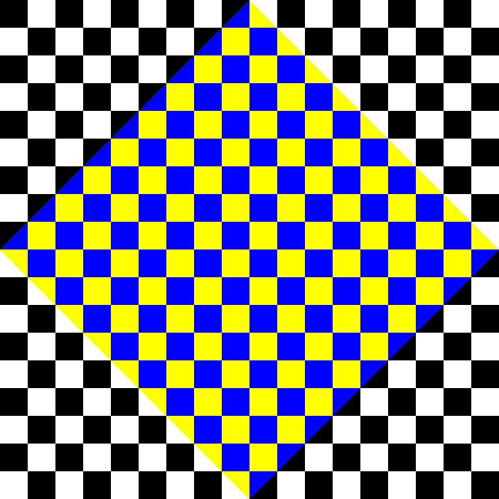

When I first started graphics programming. The very first project I did involved drawing a checkerboard. Because it was only squares I found the math to be very easy. For this reason my OpenGL code has had a function that was included in my header files that drew a checkerboard, but it remained unused for any of my modern projects, until now!
By combining my checkerboard code with my other code that displays a spinning polygon, I created a rather bizarre animation. This one is special because it uses an XOR operation combining two separate images. One is the polygon and the other is the checkerboard. What you see on this page is the result of the two images combined. The image at the top uses the spinning white square and the one below uses the color changing hue square.

And as always, the full source code required to make these gifs is available.
main.c
gl_bbmio.h
gl_bbm_polygon.h
gl_bbm_palette.h
makefile